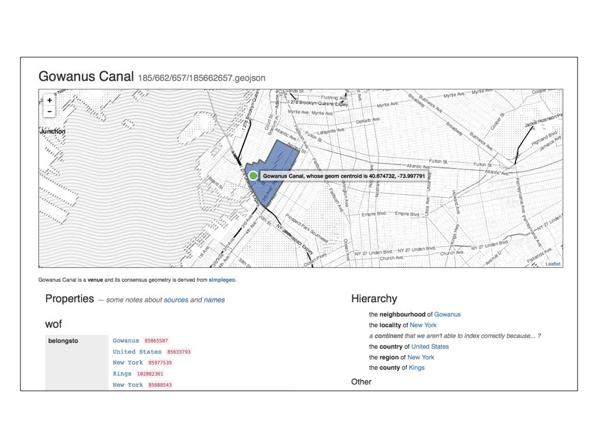
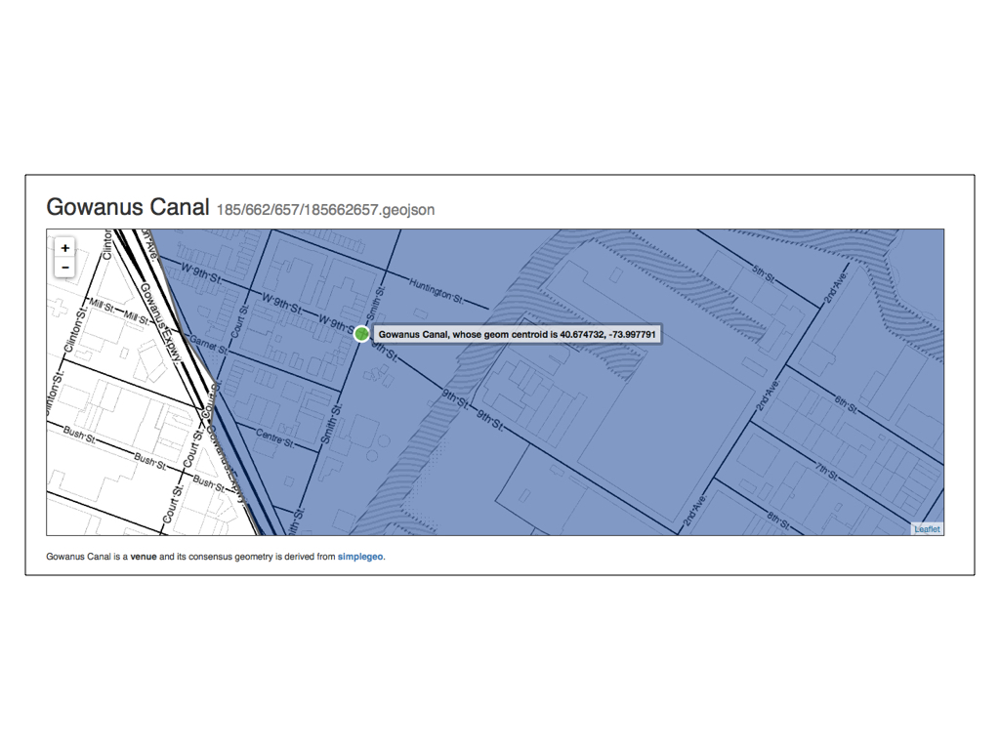
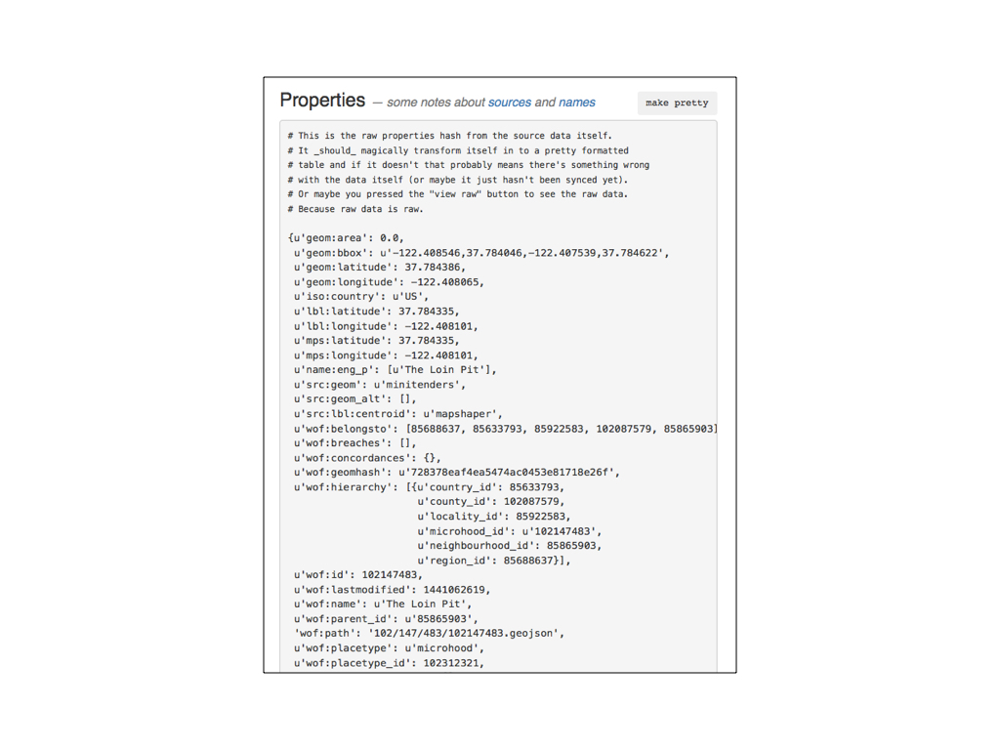

Spelunker - Jumping into Who's On First This is a blog post by thisisaaronland that was published on Sep 28, 2015 and tagged data and whosonfirst

The following are the presenter notes for a talk I did about Who’s On First and the recently released Who’s On First spelunker at the Free and Open Source Software for Geospatial conference, in Seoul.
Hello. It’s nice to be back at FOSS4G. The last time I was here was in 2007, when FOSS4G was held in Victoria. In between life and circumstance have prevented me from being able to return until now so it’s a pleasure to be speaking to you today.

My name is Aaron and I work at Mapzen. One of the things this talk has highlighted is that no one at Mapzen has any idea what my official title is. For now we’re trying out “Editor at Large” and we’ll see how that goes.
I’d like to begin by doing a quick review of the last ten years of my work-life in three short slides by way of introduction and to set the stage for the rest of this talk.

A million years ago I worked at Flickr, the photo-sharing website. One of the projects I was involved with was geotagging, or the ability to attach a location to your photos. Geo at Flickr encompassed many features and even more moving parts but one of the things to emerge from all that work were the so-called “Alpha shapes” shown above.
These were geometries for all the places in the Flickr hierarchy – countries all the way down to neighbourhoods – derived entirely from geotagged photos. As you can see some of these shapes were often weird and greedy in their perspective but rarely were they entirely wrong either.
Most importantly though we released these shapefiles as a CC0 dataset because nothing of that granularity with a permissive license had existed before.

After Flickr, I worked at Stamen, a San Francisco design studio focussed on data visualization and maps. Lots and lots of maps. Stamen has always been about more than just maps but during the years that I was there we did a pretty good job of giving people the impression that it was mostly about maps.
Stamen came of age during a time when people were just starting to become aware of the amount of data accrued by almost everything an individual or an organization did. Almost all of Stamen’s work, at some level, has been about reveling in the availability of all the data and celebrating the opportunities it presents.
This is one of the projects that I worked on at Stamen called Prettymaps. Prettymaps began life as a way to stress-test a particular piece of software by throwing as much data as we could at it and then watching what happened.
In the end Prettymaps was created using only a small slice of all the available data – alpha shapes from Flickr, roads (and on/off ramps) from OpenStreetMap and urban areas from NaturalEarth – but this is what happened when we put them all together.

More recently, I took a little bit of a detour into the museum world. Until June of this year I worked at the Smithsonian Cooper Hewitt Design Museum in New York City as part of the Digitial and Emerging Media team.
The details of the work at the Cooper Hewitt are an entirely other story. The short version is that we designed and built custom electronic hardware and all the backend software and infrastructure to allow visitors to collect objects on display in the museum and keep a permanent record, on the web, of their visit.
In short, we built the world’s most complicated bookmarking system.

I like to think that what connects all this work is a focus on networks of documents. A network of documents is hardly a new idea. In fact, what I’ve just described is the web, circa 20 years ago.
There are moments, these days, when it seems as though the web is being actively recast as little more than the transport mechanism for an even more expansive television culture so maybe it’s worth taking a moment to remember why the web was, and remains, important.
First, the importance of recall.
Recall has always been a power dynamic and the ability for people to visit, or revisit, a “thing” on the web with the luxury of choice about when they do that is pretty remarkable. Kind of like a library, the original network of documents, but not constrained by the details of physical space.
Second, the patience of use.
This is a short hop from the importance of recall but the burden is shifted from the “consumer” to the “producer”. The web makes it possible in very real and practical terms to put something online in a way that doesn’t require it to enjoy immediate mass-appeal in order to recoup the costs of that effort.
The costs of an effort are not always measured in financial terms which is another way of saying that people have always been willing to “throw money away” in the service of a project or an idea and the web has made this choice available to more people, in more places, more than possibly any time before it.
Finally, that the value of the aggregate is greater than the sum of a perfect subset.
This is not an absolute truth but it was the lesson we proved when we rebuilt the collections website at the museum. Museums don’t like to talk about this but, on the whole, they all have terrible metadata. For any given museum only a tiny fraction of their holdings have been fully vetted and properly documented. Although the Cooper Hewitt is set to have fully digitized their collection by mid-2016 when I started only about seven percent of the collection had been photographed. This is still the norm for most museums.
Mostly, any kind of collective proof – photographs, metadata or any kind of documentation about why an object has been collected – exist only as anecdotes or institutional mythology. What the Cooper Hewitt did in 2012 was to publish the entirety of its collection metadata, mistakes and all, as a CC0 dataset and then proceed to rebuild the collections website around it.
Rather than being a cathedral of emptiness (but perfect emptiness) the collections website is more like a big noisy cocktail party. It contains ample threads for casual users and scholars alike to find their own meaning in the collection.

Fast-forward to today and Mapzen is building a gazetteer of places, built from and published under a permissive license. It’s called Who’s On First.
The easiest way to think about a gazetteer is that it is a big list of places, each with a stable identifier and some number of properties describing that location and relationships to other documents in the gazetteer.
Or: A network of documents.
There are a number of reasons for building a gazetteer. One of them is that we are erecting a scaffolding for place around the other map and geo related services we are building at Mapzen. What happens when every service returns a stable identifier for each place it references in its result set that can handed off to another service for more details about that place?
Despite what New Yorkers might tell you there are in fact 12 different towns called Brooklyn out there in the world and our hope is for people to be able to use the gazetteer as a conversational shorthand for place without always having to disamguiate which place is being talked about.
This is the goal and make no mistake: Our goal is to succeed. That said, we are not the first organization to build tools and services around open source and open data, though, and we may not be the last.
One of the things we actively consider at Mapzen is: How do we ensure that our work can outlast our endeavour?
This question influences many of the decisions – the first principles – we have made about the gazetteer.

I am only going to touch, briefly, on a few of the decisions we’ve made because it’s a complex subject and this is a short talk. The first and in many ways the most important of those decisions is: The data is not the database.
Databases come and databases go. There are lots of databases out there and they are all good at different things. We are living through an interesting time where a lot of “innovation” in database technology seems to be about mostly aping the features in other databases. Often this comes at the expense of performance and where it doesn’t it often pays for that performance in complexity.
The real issue though is not any one particular database but an attempt to ensure that Who’s On First demands as small an infrastructure burden as possible. To that end we want to make sure that Who’s On First works with all the databases (or at least most of them).

So we have standardized on text files. Plain old text files because all computers can handle text files. Every place in the gazetteer is a single stand-alone text document, specifically a GeoJSON document. We chose GeoJSON because it is the least amount of markup, today, for structured geographic data and because there are lots of tools for converting GeoJSON in to all the other formats that people doing geo-work know and love.
The decision to settle on text files does make things difficult in the short-term. Storing and processing as many files as we’re generating can be problematic and definitely introduces its own kind of infrastructure burden. The advantage we have is that it’s 2015 and we are rich in processing power so it seems like a manageable problem.
Part of the work in the short-to-medium term will be thinking about how we bundle up all the source data in to formats and packages to make it easier to distribute the data and for people to get started doing something with it.

As I’ve alluded to every record has a stable permanent identifier and by extension URL (derived from that ID).
We have also made a point of storing all the paths to individual documents as relative paths. Currently we are the canonical source of truth for all this data hosted at whosonfirst.mapzen.com/data but if you need to host your own version of the Who’s On First data you shouldn’t have to do anything besides changing the prefix, or domain, indicating where the data lives.
One of the things that we’ve been actively testing is using all those IDs and URLs and pointers to other IDs to treat the network itself as a kind of database.

Here’s a screenshot of the state of California, the pink shape in the middle of the screen. The large yellow shape behind it is the United States.

What’s happening here is that only the metadata (or properties hash) for California is initially sent to the web browser. The metadata contains both a unique ID and a pointer (ID) to its parent. Once the web page has loaded there is a little piece of Javascript that generates the URLs for each location’s complete information including their geometries which are then drawn by the browser.
A practical reason for doing this is that often the geometries for countries and regions are large and prohibitive to shuttle from a database to a web server and then finally on to a web browser. A network of documents allows to distribute the cost of rendering a series of complex relationships between the server and the browser.

This is another example of the same idea but fetching pointers to display place names rather than geometries.
What you’re seeing is a screenshot of a read-only “spelunker” that we’ve built for exploring the Who’s On First data. The column on the left shows the results for a query of records whose placetype is venue and whose category is bars. The column on the right shows the same results grouped by a particular facet; all the distinct categories or regions contained in the result set and so on.
Because we store only pointers to the other locations associated with a place faceting by region returns a whole bunch of numeric IDs. Employing the same trick we use to draw geometries we can use those pointers to fetch their corresponding records, from the network, and draw their place names on the fly.

And this is important because one of the things that a gazetteer (and stable identifiers) allows you do is: Include all the names for a place. All the names, all the variations, all the translations.
The same principle applies to geometries for a location. We are used to thinking that there is only ever one canonical geometry (or polygon) for a place but in practice that’s not entirely true.
For example, there might a complex ground-truth style geometry which is very detailed and contains all the nooks and crannies that define the contour of a place. This geometry will likely be very large and sometimes all you need is a display geometry to show a small map on a mobile phone. There is no need for anything as large as a ground-truth geometry. Likewise if you’re doing reverse-geocoding you might want a geometry that includes a country’s territorial waters that extend beyond the coastline. The list goes on.

We also store as many concordances to other gazetteers as possible. We want Who’s On First to be as thorough and comprehensive of a dataset as we can make it but that doesn’t mean we need to or want to drink everyone else’s milkshake. We would rather store pointers to the work that others are doing.

Likewise relationships and hierarchies. More specifically, we have chosen to allow places to have multiple hierarchies because that simply refects the reality of the place or placetype.
Consider the “Bay Area” in and around the city of San Francisco. It and many other metropolitan areas like it are typically parented by at least two or more counties. Consider a land disputed by Israel and Syria or China and India or India and Pakistan. The list goes on.

The last thing I want to mention before moving on are two properties that every record contain: supersedes and superseded_by. Neither property attempts to encode the semantics of why or how a place might have been superseded only that is has been.
These properties allow us reflect the change that a place has undergone while still preserving a stable record of the place it used to be. For example, Yugloslavia which existed in three distinct forms during the 20th century before finally dissolving in the 1990s.

Hopefully you’re starting to see a theme. Who’s On First is not an attempt to settle debates about place but rather to provide a scaffolding that can reflect the debate about a place and allow for as many decisions about how assertions about a place are interpreted.

I’ve mentioned something called a spelunker, a few times now.
Spelunking is an expression used to describe the act of exploring caves, of feeling your way around an unknown (and often dark) space by instinct and intuition. Dealing with large datasets is often the same and Who’s On First is nothing if not a large dataset.
The spelunker is the name we’ve given to a little read-only web-application we’ve written for searching and browsing and sanity checking all the data we’ve imported so far.
All the Who’s On First data is indexed in both Elasticsearch (without geometries) and PostGIS (without properties). Currently the only functionality in the spelunker is available through the Elasticsearch endpoint but that will evolve soon enough. I mentioned that the goal is to ensure that Who’s On First is not particular to any one database and that is part of the exercise with the spelunker.

Here are all the localities in South Korea that have been classified as “megacities”.

Here are all the localities that are descendants of South Korea.

Here is the neighbourhood of Gowanus Heights in Brooklyn, New York. Gowanus Heights has a little bit of a contested history and its creation is a story best saved for another talk.

I mention it to demonstrate one of the properties of the Who’s On First data and the spelunker that we’ve started to work on: Breaches.
Breaches are geometries of the same placetype that overlap one another.
Gowanus Heights “breaches” the neighbourhood of Gowanus. We’ve only encoded breaches for a handful of locations so far but the plan is to keep track of all the breaches for all the places.
We want to do this for two reasons: First, they can serve as internal flags for records that still need to be vetted or edited. Secondly they can act as signals to people using the Who’s On First data that a given location might still be open to interpretation.
All neighbourhoods are disputed, after all.

You may have noticed that there are two circular markers contained by the geometry for Gowanus. One of them is the arithmatic centroid for that geometry and the other is the label centroid – where the best place to display the name for this location, as determined by Matthew Bloch’s excellent Mapshaper.

Here is the Gowanus Canal which is parented by the neighbourhood of Gowanus.
It was classified as a “venue” by SimpleGeo who published a CC0 dataset of business listings in 2010 and which we are in the process of importing.

If you’re not from New York you may not appreciate just how wrong the current data for the Gowanus Canal is.
Aside from the fact that there is a Korean taco joint at the corner of 9th and Smith now, the Gowanus Canal is literally a toxic waste site and when the canal floods it is generally understood to be a public health emergency.
This sort of discrepency is exactly what the spelunker was built to uncover.
And yes, you read that right: A toxic waste site in the middle of Brooklyn does in fact flood in to the streets, from time to time…

The spelunker is also a way for us to see discontinuities between administrative perspectives and the realities on the ground.
In 2011 Miquel Hudin and Wendy MacNaughton published a piece, in the online review The Bold Italic, about the often derided and more frequently neglected San Francisco neighbourhood of the Tenderloin. Hudin wrote:
Most consider our Tenderloin neighborhood to be a vast black hole of no-go in downtown San Francisco.
Truth be told, there are certainly a couple of blocks full of downright nasty that neither you nor I should make a habit of frequenting. But beyond those unfortunate social potholes, the Tenderloin is a rich neighborhood with a great wealth of small areas each with their own character.
Since The Bold Italic popularized the term “microhood,” it’s only fitting to break down the Tenderloin by the sum of its parts. So, presented here is the “Tenderloin Microhoods Map.” While some of it is just for fun, a whole lot of it is most definitely true.
So, in 2015 we imported all those microhoods into Who’s On First, classified them accordingly and parented them by the Tenderloin.
Rather than do a spatial point-in-polygon test to ensure that each on of the microhoods was contained by the geometry for the Tenderloin we simply assigned them a parent ID of 85865903.

And here’s what that looks like.
The geometry for the Tenderloin was sourced from David Blackman’s Zetashapes project, derived from a number of different sources. The geometries for the Mini-Tenders were sourced by a pair of local San Franciscans.

This is just a detailed view of the last slide. Here the microhood called The Loin Pit sits entirely outside the geometry of its parent neighbourhood, the Tenderloin.
The issue right now isn’t so much that one or the other is right (or at least more correct) but that we have a way to see those differences.

By default the spelunker displays the properties for each record as a raw blob of JSON. Once the page has loaded there is code that (again) fetches the record for the current location over the network, parses the properties data and renders the same data as an HTML table.
If this approach sounds both inefficient and like overkill that’s because it probably is.
At the time it was also easier than parsing the escaped JSON in the html <pre> block (which wasn’t working because… computers?) and allowed to further test the idea of fetching, parsing and displaying remote data after the page had loaded.
In some ways the spelunker has been specifically designed to be potentially inefficient as a way to help us identify the stress points in the models we’ve chosen for Who’s On First.

This is what the same data looks like rendered as a series of nested tables. See the way the raw properties blob only contains pointers (IDs) and the pretty version contains names? More network requests! Requests are cached on the page, though, so we only fetch the record for an individual location once.
It’s also worth considering caching the same data locally (using some form of HTML5 local storage technology) but we haven’t done that yet.
The spelunker is a read-only application, by design. That said we are planning to build a tool for editing Who’s On First documents and the value of the spelunker is to help us start to think through the interface details of how an editing tool should work.
We are starting with a read-only interface as a way to understand what parts of that interface should be dynamic. Editing is as much about review and scanning, looking for errors or inconsistencies, so that’s the first step.
This has been a short talk and I have only touched on some of the highlights of the Who’s On First project. Location is a complicated subject and it’s early days still but there is a long and detailed blog post discussing the motivations for shouldering the burdens of a project like this:
https://mapzen.com/blog/who-s-on-first
The spelunker itself is available for… spelunking at:
http://whosonfirst.mapzen.com/spelunker/
Like everything we do at Mapzen the spelunker is an open-source project and available for review and download on GitHub.
Thank you.